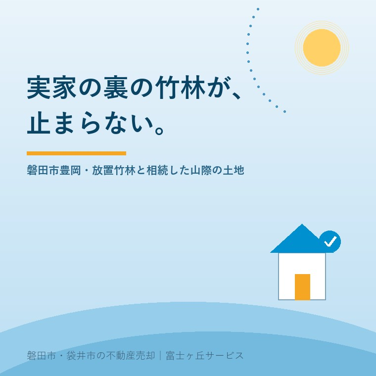

2026年8月12日｜カテゴリ：地域と不動産／コスト・税・制度

この記事の要点
Q. 豊岡の実家を相続しました。家の裏に竹やぶが付いていて、年々こちらへ伸びてきています。放っておいてもいいものでしょうか。
A. 放っておくと、費用も手続きも増えます。まず期限のある手続きから片づけてください。相続した土地が地域森林計画の対象になっている森林なら、所有者となった日から90日以内に市町村長へ届け出る義務があります（森林法の森林の土地の所有者届出制度）。相続で財産分割が済んでいなくても、相続開始の日から90日以内に法定相続人の共有物として届け出ます。届け出なかったり虚偽の届出をしたりすると、10万円以下の過料が科されることがあります。これは相続登記とは別の制度です。そして竹は、切ることにも届出が要る場合があります（伐採及び伐採後の造林の届出は、着手の30〜90日前まで）。竹林は「面積」ではなく「管理の手間」で評価される財産です。磐田市・袋井市・森町では、介護施設の運営から不動産事業を始めた富士ヶ丘サービスのような「介護×不動産」専門の会社に相談するという選択肢があります。
磐田市の北のほう、豊岡の集落を歩いていると、家の背後にすぐ山が迫っている風景に出会います。斜面には杉やヒノキ、そして竹。
この「裏山」が、相続のときに突然、書類の上に現れます。固定資産税の通知書に、見たこともない地番が並んでいる。地目は山林。面積は数百平方メートルから、ときに数千平方メートル。親御さんは何十年も当たり前に持っていたけれど、子の代になって初めて「これは何だ」となるのです。
磐田市の資料によれば、市内の森林面積は2,610ヘクタールで、市の総面積の約16パーセントを占めます。人工林の面積は1,435ヘクタール、人工林率は約55パーセントです。磐田は平野のまちという印象がありますが、6分の1近くは森林です。
今日は、竹林を含む山際の土地を相続したときに、何を、どの順番でやるのかを整理します。制度は、2026年8月12日時点で林野庁・磐田市等が公表している内容に沿って書きます。
最初に、竹の性質だけ確認しておきます。ここが分かっていないと、対策の順番を間違えます。
竹は、地中を横に走る地下茎でつながって広がります。地上の1本1本が独立した木ではなく、地下で一続きになっている、というのが厄介なところです。地表に出ている竹を1本切っても、地下茎は生きています。翌春には、その先からまた新しい竹が出ます。
手入れされていた頃は、たけのこを掘り、古い竹を伐り出すことで、竹林は一定の密度に保たれていました。その手入れが止まると、竹は隣接する林や畑、そして宅地へ向かって前進します。
林野庁も、竹材やたけのこの生産が減ってきたことにふれたうえで、「竹林の拡大により森林の公益的機能の発揮に支障を生じることも懸念」されるとしています。これは個人の庭先の話ではなく、全国的な課題として認識されているということです。
実務上、押さえておきたいのは次の点です。
「うちの竹が、隣の畑に入ってしまっている」。あるいはその逆。山際ではよくある相談です。
令和5年（2023年）4月1日に施行された改正民法により、越境した竹木の枝の扱いが変わりました。
原則は従来どおりで、越境された土地の所有者は、竹木の所有者に枝を切除させるのが基本です。そのうえで、次のいずれかにあたるときは、越境された側が自ら枝を切除できるようになりました。
| 自ら切除できる場合 | 内容 |
|---|---|
| 催告しても切らないとき | 竹木の所有者に切除するよう催告したが、相当の期間内に切除しないとき |
| 所有者が分からないとき | 竹木の所有者を知ることができず、又はその所在を知ることができないとき |
| 急迫の事情があるとき | ただちに対応する必要があるとき |
いっぽう根については、境界線を越えたときは催告なしにその根を切り取ることができます（民法第233条第4項）。枝と根で扱いが違うという点が、竹の場合はとくに効いてきます。竹が広がる主役は地下茎、つまり根の側だからです。
費用については、越境された土地の所有者が自ら枝を切り取る場合、基本的には竹木の所有者に請求できると考えられています。
売主の立場で読み替えると、こうなります。実家の竹が隣地へ越えているなら、その費用を将来請求されうる立場にあるということです。逆に隣から来ているなら、根は自分で切れるが、枝は手順が要る。どちらの側かを、売る前にはっきりさせておく必要があります。隣地との草木の越境については空き家の草や枝の越境の記事にも書きました。
ここからが、期限のある手続きです。知らずに過ぎてしまう方がいちばん多いところなので、丁寧に書きます。
林野庁の説明によれば、個人・法人を問わず、売買や相続等により森林の土地を新たに取得した方は、面積にかかわらず届出をしなければなりません。期限は土地の所有者となった日から90日以内、届出先は取得した土地のある市町村の長です。平成24年4月1日以降に森林所有者となった方が対象です。
相続の場合の扱いも、はっきり示されています。
相続の場合、財産分割がされていない場合でも、相続開始の日から90日以内に、法定相続人の共有物として届出をする必要があります。
つまり、遺産分割の話し合いが長引いていても、届出は待ってくれません。「誰のものか決まってから」ではなく、「決まっていなくても、まず出す」です。
届出書に書くのは、所有権移転の年月日と原因、前所有者の氏名・住所、届出人の氏名・住所・連絡先・国籍等、土地の所在場所と面積、土地の用途などです。磐田市の場合、添付するのは登記事項証明書や売買契約書等の原因となる事実を証明する書面（写しで可）と、土地の位置図です。
そして、届出をしない、または虚偽の届出をしたときは、10万円以下の過料が科されることがあります。
すべての山林が対象というわけではありません。対象は森林法第5条に規定する地域森林計画の対象となっている森林です。磐田市の場合、静岡県の天竜地域森林計画図に示された森林がこれにあたります。
確認は、磐田市農林水産課に問い合わせるか、静岡県の森林クラウド公開システムで見ることができます。
| 項目 | 内容 |
|---|---|
| 提出先 | 磐田市 経済産業部 農林水産課 基盤整備グループ |
| 所在 | 〒438-8650 磐田市国府台3-1 西庁舎1階 |
| 電話 | 0538-37-4913 |
注意していただきたいのは、これが相続登記とは別の制度だという点です。令和6年4月1日から相続登記の申請が義務化されましたが、森林の届出は、登記をしたかどうかにかかわらず必要とされています。ふたつある、と覚えてください。
「じゃあ、竹も木もぜんぶ伐ってしまおう」と考えたくなります。ここにも手続きがあります。
磐田市によれば、地域森林計画の対象森林で立木を伐採する場合、伐採及び伐採後の造林の届出書を提出します。提出時期は伐採行為に着手する30日前から90日前までです。
さらに、規模が大きくなると許可の世界に入ります。磐田市の案内では、1ヘクタールを超える開発（太陽光発電事業の場合は0.5ヘクタールを超える開発）は林地開発許可が必要とされています。
売却の実務でどう効くか。買主が「買ったら伐ってきれいにする」と考えている場合、その作業には日数と手続きが伴います。「すぐには着手できない」ことを最初に伝えておくと、後の行き違いがなくなります。窓口は同じく農林水産課基盤整備グループ（電話0538-37-4913）です。
森林については、所有者の責務を整理する制度も動いています。平成31年4月1日に施行された森林経営管理法にもとづく森林経営管理制度です。
林野庁の説明では、経営管理を行う必要があると考えられる森林について、市町村が森林所有者の意向を確認したうえで、森林所有者の委託を受け、民間の林業経営者に再委託するなどにより、林業経営と森林の管理を実施する仕組みとされています。
ここで押さえておきたいのは、「持っているだけで何も求められない土地」ではなくなってきている、という流れです。相続放棄をしても管理の問題が残る場合があることは国庫帰属制度の記事でも触れたとおりで、山林は、その典型です。
とはいえ、「だから今すぐ手放しましょう」とは申し上げません。手入れをして活かす道もあります。判断の材料として、竹林つきの土地の選択肢を並べておきます。
| 選択肢 | 向いている場合 | 注意点 |
|---|---|---|
| 手入れして持ち続ける | 地元に住む家族がいる。たけのこや竹材の利用がある | 数年単位の繰り返し作業になる。費用の見通しが要る |
| 宅地と一体で売る | 実家と裏山が同じ敷地続きにある | 買主が管理を引き受けられるか。境界の確認が先 |
| 宅地だけ売り、山林を残す | 宅地の買主が山を要らないという場合 | 残した山の管理責任は自分に残る。おすすめしにくい |
| 隣接する所有者に相談する | 隣が山林や農地を持っている | まとまれば話が早い。境界と面積の確定が前提 |
田畑や山林を含む相続全体の考え方は、相続した田んぼ・畑・山林は売れない？にまとめてあります。あわせてご覧ください。
順番だけ、はっきりさせておきます。
この6つを済ませてから価格の話に入ると、交渉がまるで違います。買主が不安に思う点が、すべて資料で埋まっているからです。
当社は、磐田市見付で介護施設を運営するところから不動産の仕事を始めました。ご相談の入口は、たいてい「親が施設に入った」「親を看取った」です。
山際のご実家では、親御さんが元気なうちは自分で竹を伐っていたという話をよく伺います。そして施設に入られた年から、竹だけが伸び続ける。次にご家族がその土地を見るのは、たいてい相続のときです。そのとき、90日の期限はもう動き始めています。
私たちが目指しているのは「高く売る」ことだけではなく、「家族が困らない売却」です。介護の見通し、相続の順番、そして土地に付いてくる義務。この3つを一度に見られることが、介護から始まった不動産会社の強みだと思っています。
整理の道具として、ふじがおか実家カルテを用意しています。
竹林は、放っておくと重くなり、順番どおりに手を付ければ整理できる財産です。怖いのは竹そのものではなく、期限のある手続きを知らずに過ごしてしまうことです。
まずは、固定資産税の通知書をご用意ください。山林の地番がいくつあるかを数えるところから、一緒に始めましょう。
ふじがおか実家カルテ｜山林・竹林つきの実家にも対応します
裏山の地番から、数えます。
住所をもとに、山林の地番と面積、届出の要否、境界の状況、名義と相続登記、農地の有無を整理し、次に何を確認すべきかを1枚にしてお出しします。作成料0円・入力約1分。申込みだけで売却依頼にはなりません。
本記事は2026年8月12日時点で林野庁・静岡県・磐田市等が公表している情報に基づく一般的な解説であり、個別の土地についての届出の要否や、法的な判断を示すものではありません。届出が必要となる森林の範囲、届出書の様式と添付書類、伐採届の提出時期の運用は年度や地域によって異なることがありますので、最新の内容は磐田市農林水産課へ必ずご確認ください。越境した竹木の枝や根の切除、費用負担については個別の事情により結論が変わりますので、実際に切除される前に弁護士等の専門家へご相談ください。境界の確定は土地家屋調査士へ、相続登記は司法書士へ、相続税や譲渡所得の取り扱いは税理士へご確認ください。竹林の伐採や処分に要する費用は、面積・傾斜・搬出条件によって大きく異なります。個別のご相談は当社までどうぞ。

この記事を書いた人：大石浩之（宅地建物取引士）
磐田市・袋井市・森町で「介護×相続×空き家」に特化した不動産売却支援を行う富士ヶ丘サービスの代表取締役・宅地建物取引士。介護施設の運営から不動産事業を始めた経験をもとに、売主とご家族が困らない売却を一件ずつお手伝いしています。プロフィール
磐田市・袋井市・森町の実家じまい・相続空き家相談
固定資産税通知書だけでも相談できます
住所があいまいでも、通知書や写真から名義・道路・農地・残置物の確認順を整理します。カルテ申込またはLINEで状況を送ってください。
富士ヶ丘サービス株式会社／静岡県磐田市見付5789番地1／TEL:0538-31-3308／静岡県知事 (2) 第14083号／代表取締役・宅地建物取引士 大石 浩之